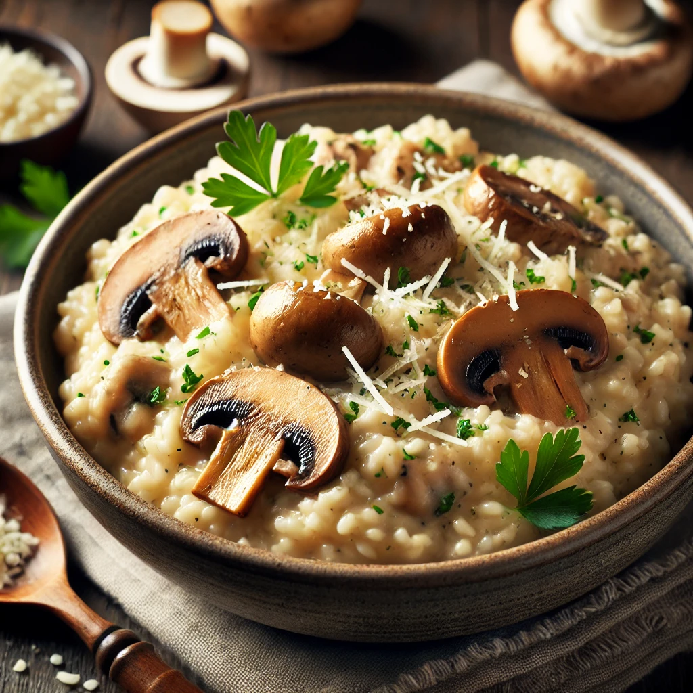

Recipe 2: Creamy Mushroom Risotto 🍄
Ingredients:
- 1 cup Arborio rice
- 2 cups vegetable broth (warm)
- 1 cup mushrooms, sliced
- 1 small onion, finely chopped
- ½ cup grated Parmesan cheese
Steps to Make It:
- In a pan, sauté onions in butter until soft, then add sliced mushrooms and cook until tender.
- Add Arborio rice and stir for 1-2 minutes until slightly translucent.
- Slowly add warm vegetable broth, one ladle at a time, stirring continuously.
- Continue adding broth and stirring until the rice becomes creamy and fully cooked.
- Remove from heat, stir in Parmesan cheese, and serve warm.
Creamy Mushroom Risotto Image:
